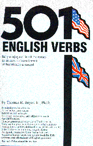

Page index / publications
501 Russian Verbs

501 English Verbs, fully conjugated in all the tenses in easy-to-learn format alphabetically
arranged
(Barron's: 1998)
ISBN 0-7641-0304-0
- A great referencework and review book for ESL students and all students of English grammar
- Each of the 501 pages contains a single verb with principal parts, active and passive voices, indicative, imperative and subjunctive moods
- Principal parts for an additional 500 verbs (1001 verbs in all)
- Concise grammatical overview of English verbs
- Phrasal verbs with examples
back to index of publications